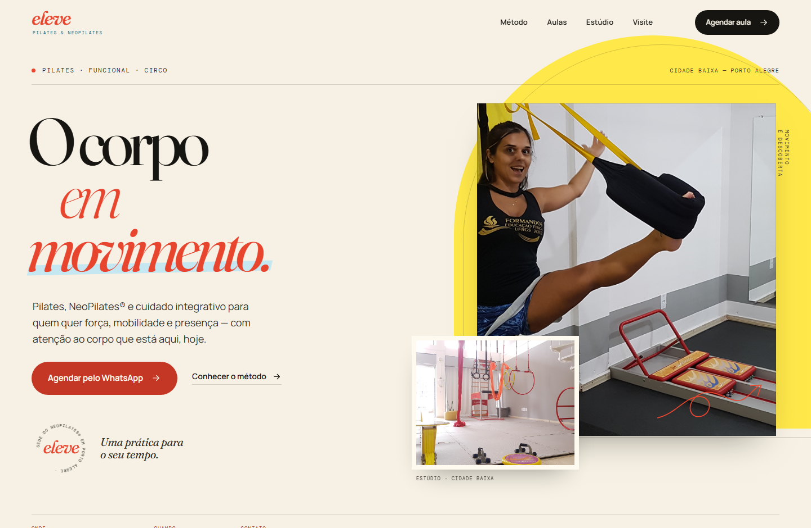
Eleve NeoPilates
Direção editorial de movimento: papel quente, manteiga e coral, tipografia Fraunces e fotos reais do estúdio. Horários, serviços e o endereço confirmados com a cliente; CTA direto no WhatsApp.
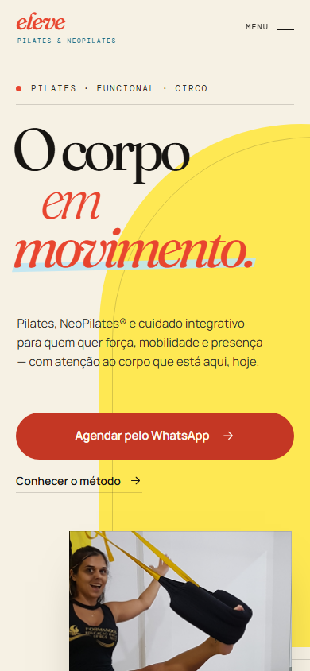
Nove clientes · Porto Alegre
Cada projeto abaixo tem arte própria, dados verificados e um objetivo em comum: transformar a presença digital de negócios reais em sites que parecem sérios, rápidos e proprietários.
Nove sites estáticos sob medida — cada card reúne desktop, mobile, paleta e o conceito por trás.

Direção editorial de movimento: papel quente, manteiga e coral, tipografia Fraunces e fotos reais do estúdio. Horários, serviços e o endereço confirmados com a cliente; CTA direto no WhatsApp.

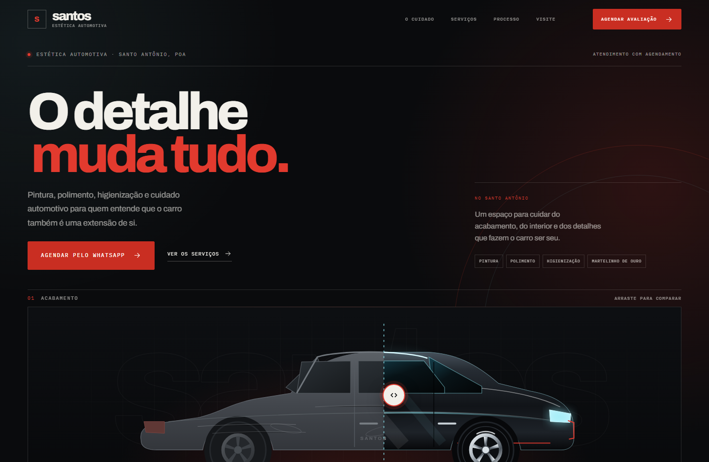
Precisão noturna: preto profundo, vermelho sinal e cromo. Sem fotos de serviço usáveis públicas, o site usa um carro ilustrado em SVG brilhante com slider de antes e depois, feito para funcionar com clique, teclado e toque.
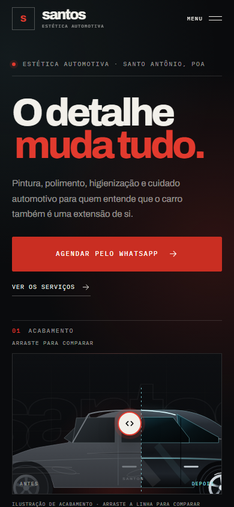
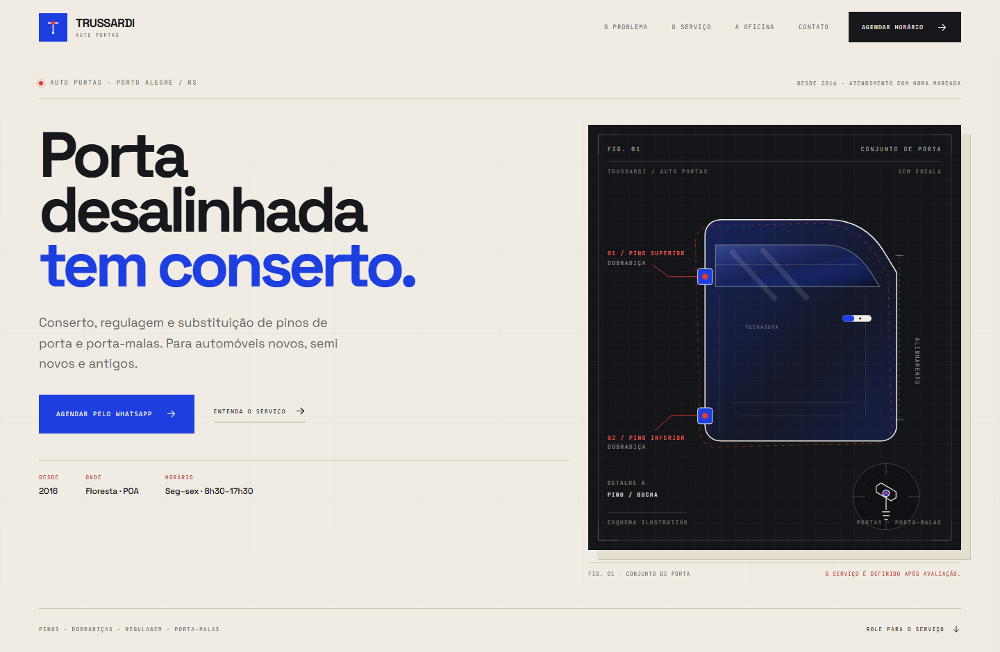
Catálogo técnico: papel, grafite e cobalto com monoespaçadas. O serviço — conserto e regulagem de pinos de porta e porta-malas — é apresentado como uma ficha de engenharia, com PDF oficial dos serviços enviado pelo próprio cliente.
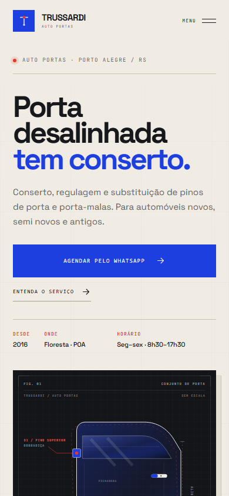
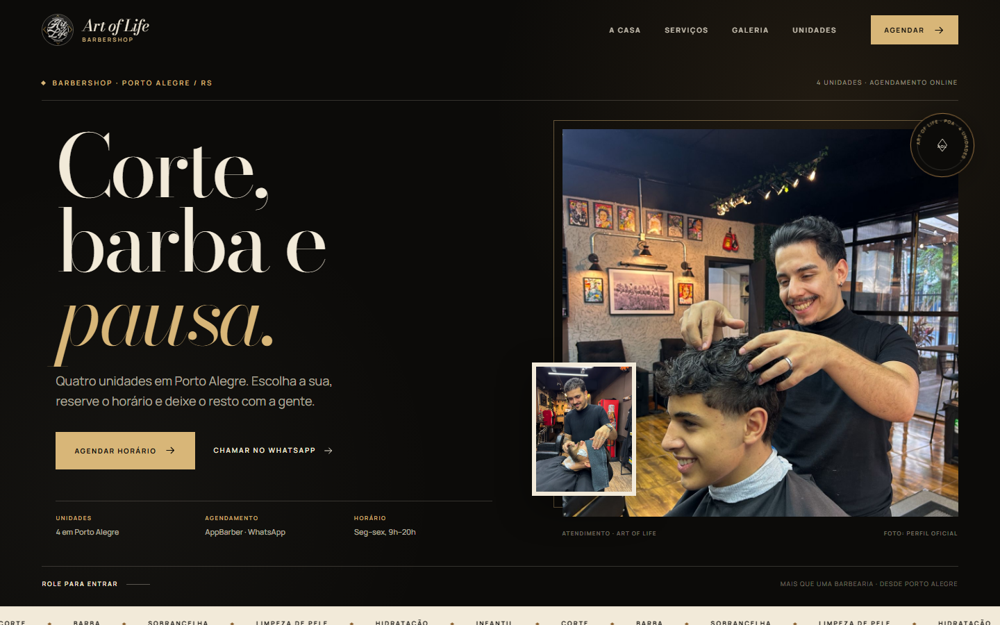
Editorial barbershop: preto quente, osso e latão, Bodoni Moda. Fotos do perfil oficial com crédito, menu com preços de referência de uma unidade e agendamento pelo AppBarber com WhatsApp paralelo. Nada inventado: o que não tem evidência, não entra no site.
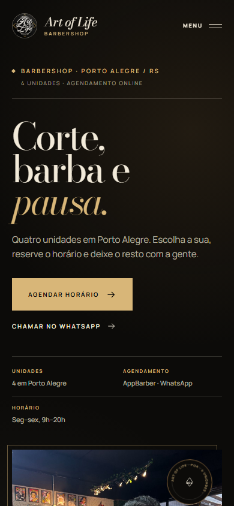
Os cinco negócios seguintes do NL adm, com o mesmo processo: pesquisa, direção própria e site estático.
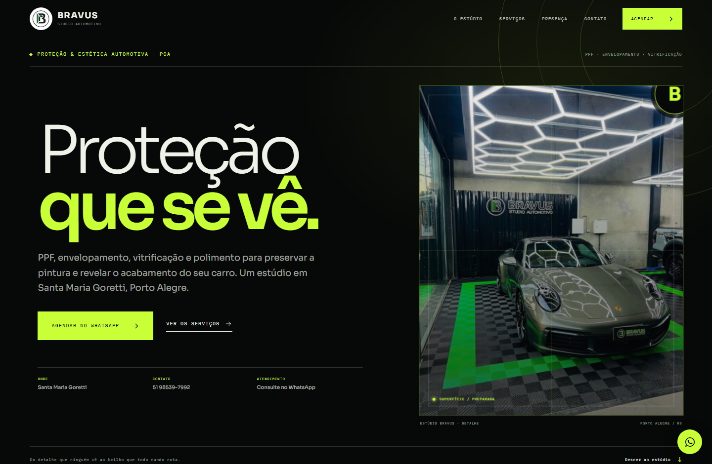
Oficina-laboratório em preto e lima, com tipografia técnica, catálogo de 12 serviços e mapa sob demanda. PPF, envelopamento, vitrificação e polimento com fotos do perfil oficial.
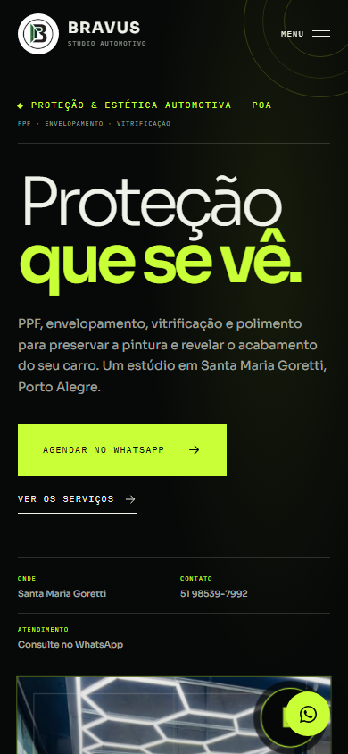
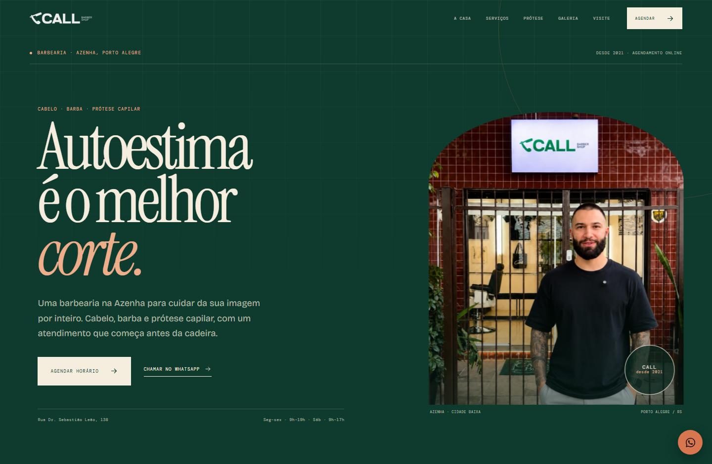
Verde profundo e creme para uma barbearia que trata autoestima por inteiro. Prótese capilar explicada com slider antes/depois, serviços da casa e agendamento no AppBarber.
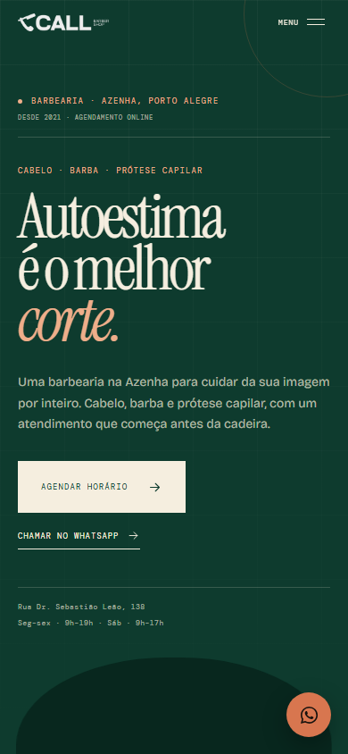
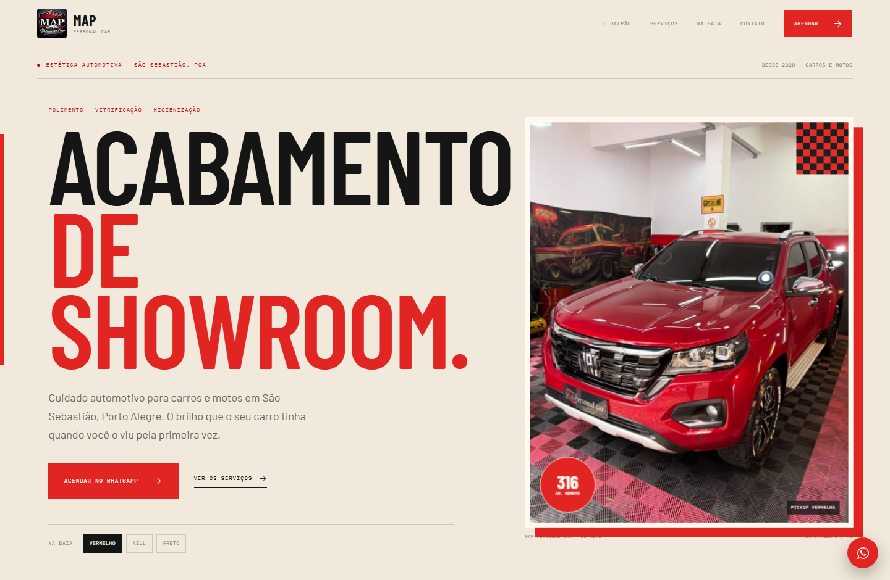
Showroom em papel, vermelho-sinal e xadrez de garagem. Seletor de carros, catálogo de serviços e mapa do endereço. Fotos oficiais do galpão e tipografia condensada.
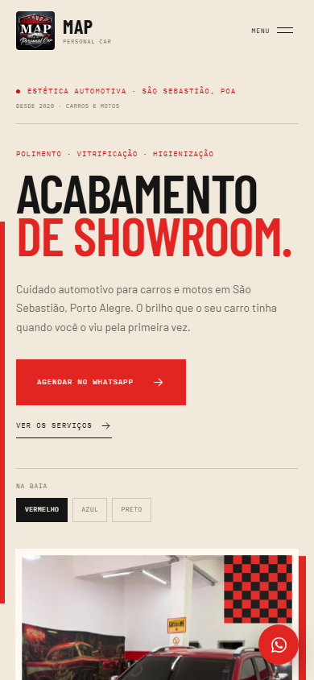
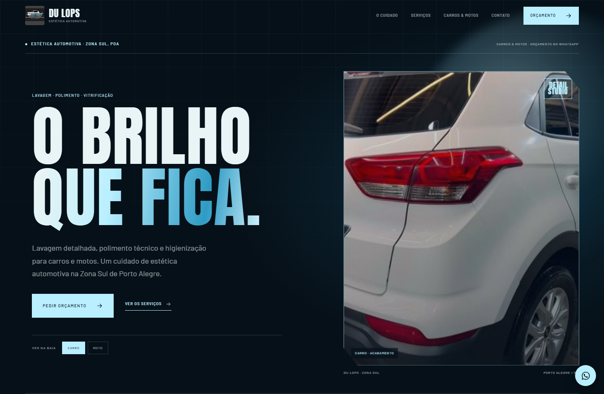
Azul cromado e tipografia de pôster para carros e motos. Alternância entre veículo e moto na abertura, catálogo de serviços e contato direto. Sem endereço inventado.
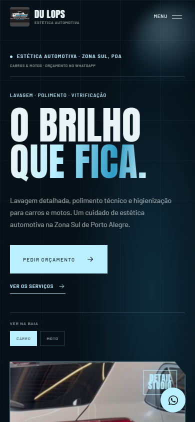
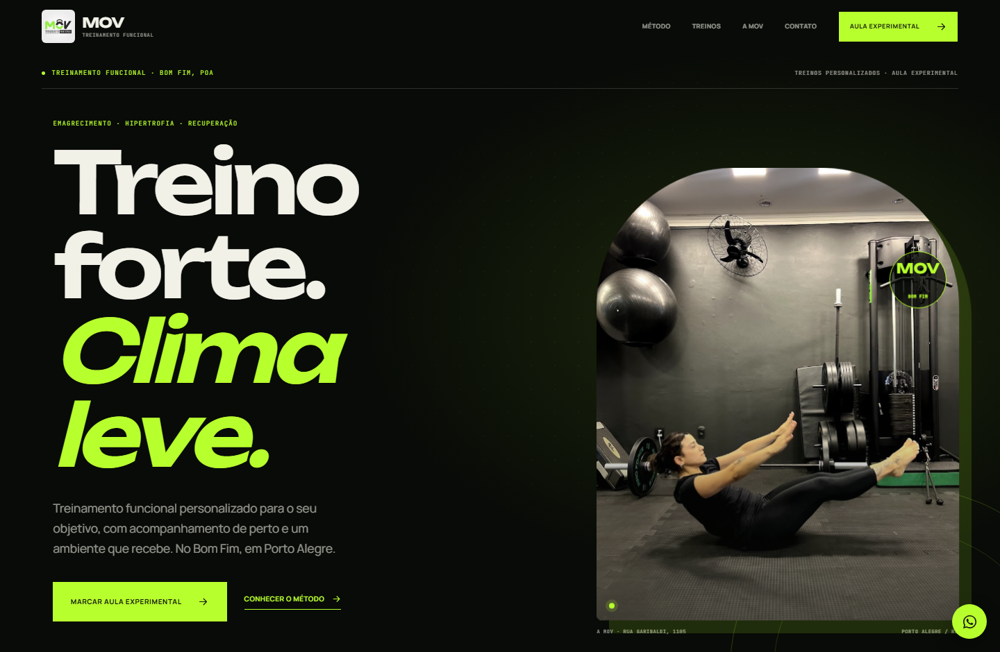
Preto e neon para um estúdio de treino funcional. Abas de objetivo com navegação por teclado, aula experimental pelo WhatsApp e mapa do Bom Fim. Fotos oficiais do espaço.
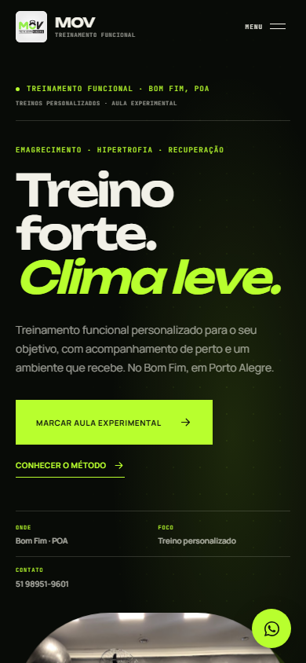
Como trabalhamos
Endereço, horário, contato e preços só entram no site com confirmação — site do cliente, perfil oficial ou material enviado. Se não temos evidência, não publicamos.
Sem painel, sem dependências externas pesadas. Fontes self-hosted, imagens locais e HTML/CSS/JS puro — carrega rápido e não quebra.
Nenhum template repetido: cada negócio recebe paleta, tipografia e composição próprias, alinhadas ao que ele representa.